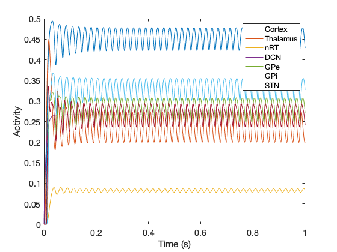

This is the readme for the model associated with the paper:
Yousif N, Bain P, Nandi D and Borisyuk R (2020) A Population Model of
Deep Brain Stimulation in Movement Disorders From Circuits to
Cells. Front. Hum. Neurosci. 14:55.
doi: 10.3389/fnhum.2020.00055
This model was contributed by Nada Yousif.
Download and extract this archive, change directory to the extracted folder and run the model by typing
BGTCCshare
on the MATLAB command prompt.
After a few seconds the following figure will be created (tested with MATLAB R2019a):
